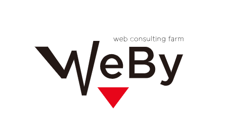
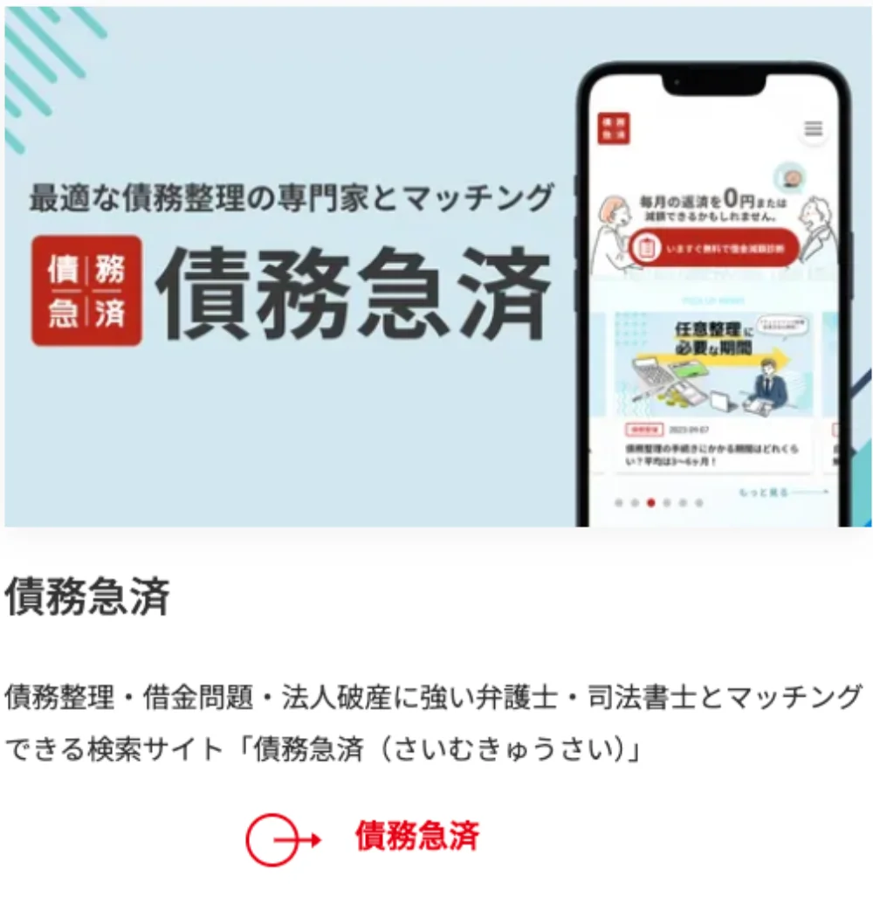
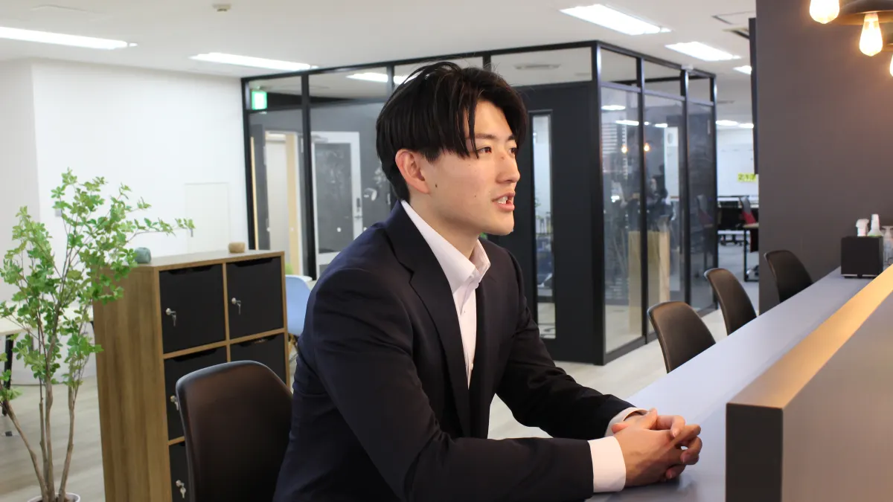
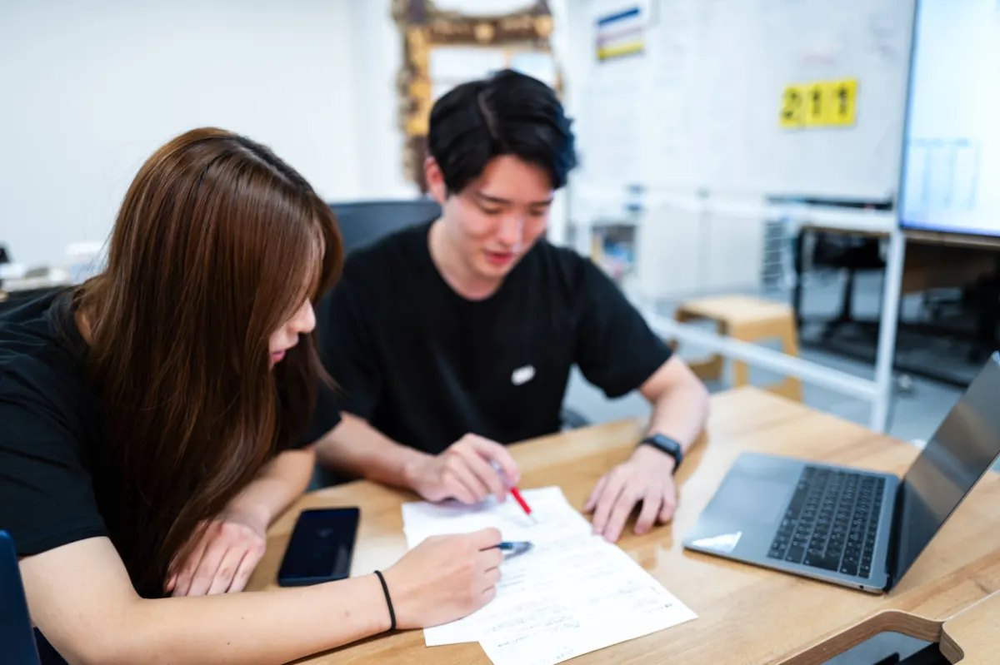
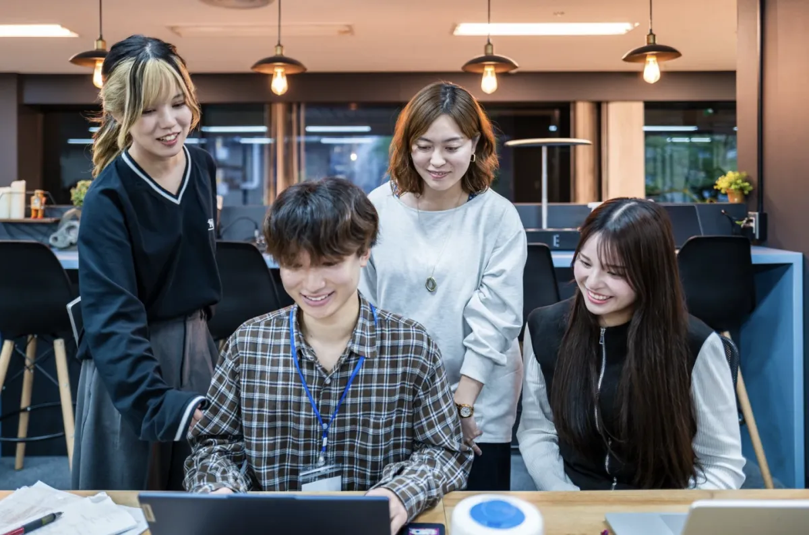
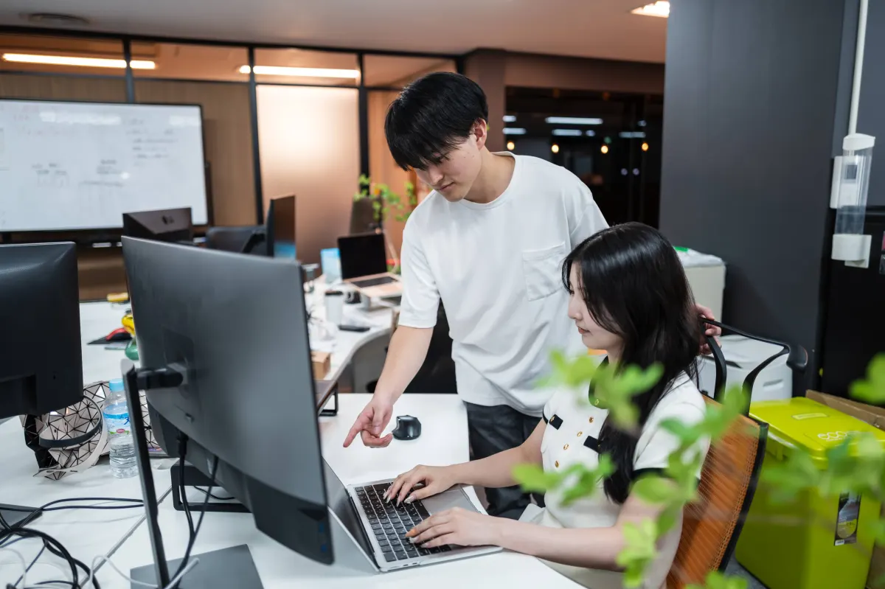
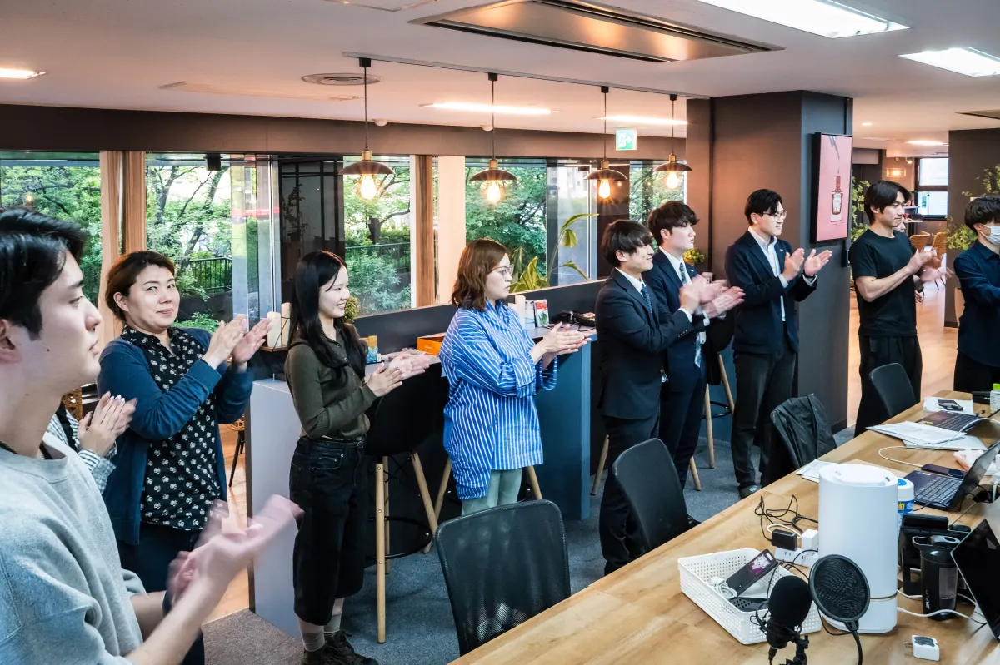
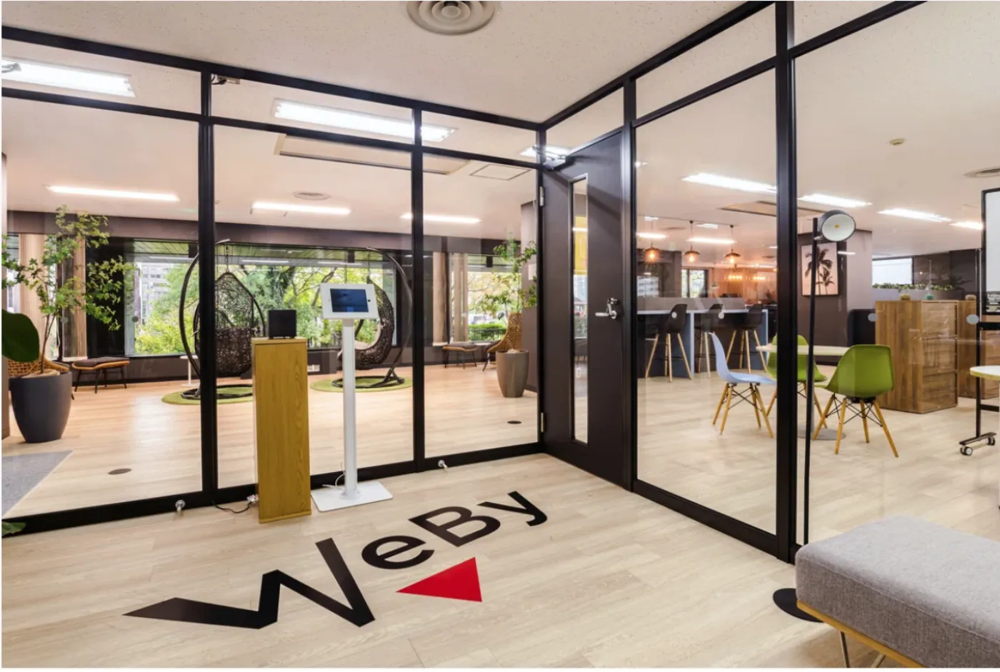
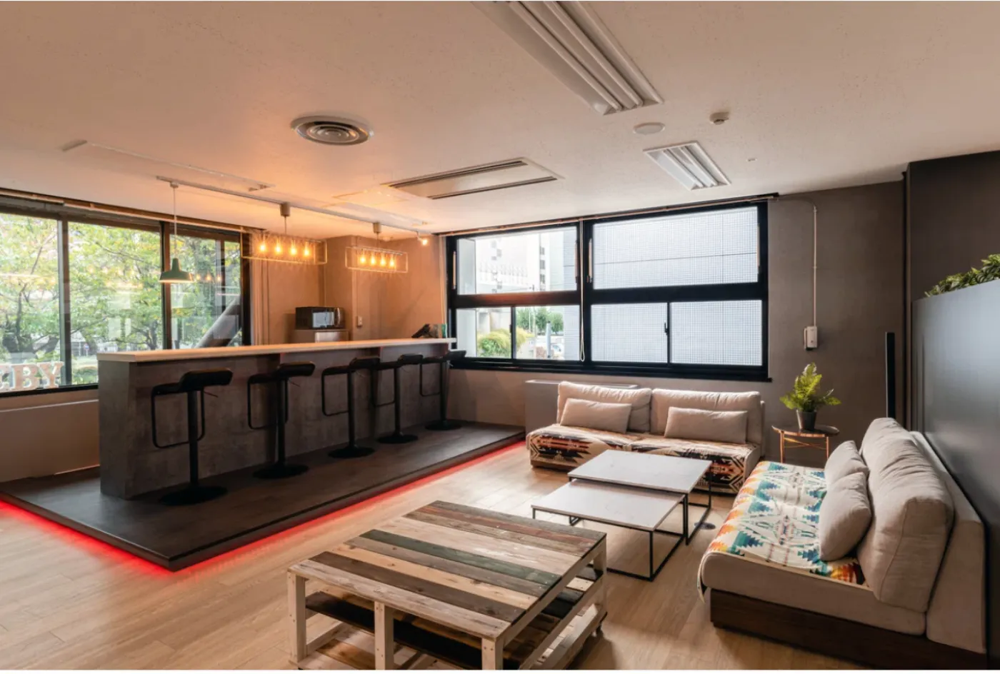
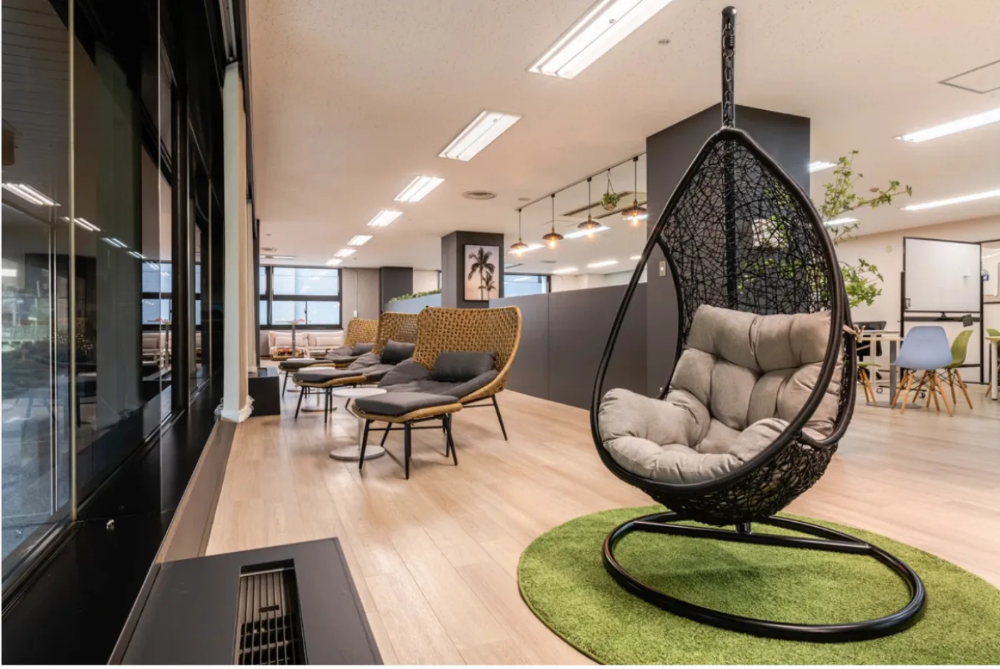

私たちのクライアントは、法律事務所・医師/獣医師・結婚プランナー などの「士業はじめとする専門家」の方々です。
本来、専門的な知識と経験で、
悩む人を救えるはずの専門家たち。
でも多くの場合、彼らの存在は、
本当に必要としている人に届いていません。
この「届かない」を、 Web の力で解決するのが私たちの仕事です。
自社メディア（専門家プロファイル・債務急済 等）と Web コンサルティングを通じて、 私たちは "届かない信頼"を繋ぐインフラを作っています。
法律・お金・住まい・キャリア・健康など多様な分野の専門家とユーザーをつなぐ総合プラットフォーム。実績・口コミでブランディングし、ワンストップで相談できる安心感を提供。
債務整理・借金問題を抱えるユーザーと専門家をつなぐポータル。士業の新たな集客チャネル。
ホームページ・Google検索対策・ブランディング設計を通じ、広告に頼らない自走型の集客基盤を構築。専門チームが設計から運用まで一貫サポート。
Googleマップ上での上位表示・口コミ管理・ビジネスプロフィール最適化により、地域の専門家事務所の集客を最大化。MEO＋HP流入で集客チャネルを多様化。
入社研修期間は約3ヶ月間。学習状況に合わせて柔軟にカリキュラムを調整しながら、
ベテラン先輩のFBを受けつつビジネスの基礎力を着実に積み上げます。
業界知識・商材の理解を深め、WEBYの価値観を学ぶ。働くための土台をしっかりと構築。
座学・ロールプレイで営業の基礎を習得後、OJTで実践へ。PDCAサイクルを回す経験を積む。
営業活動の実践を重ね、自分で考え改善する力を習得。研修終了後は営業メンバーとして自走。
担当顧客を持ち、提案からクロージングまで自分で完結。成果が数字で見えてくる。
入社後1ヶ月間は、業界知識・商材の理解を深め、同時にWEBYの価値観も学びます。ここでは、WEBYで働くための土台をしっかりと作ることができます。
座学とロールプレイングを通して営業の基礎知識を身につけます。知識を身につけたら、いよいよ実践的な営業（OJT）へ。PDCAサイクルを回す経験を積み、成果を出すための考え方を学ぶ期間です。
営業活動の実践を重ね、自分で考え改善する力の習得を目指します。独り立ちに向けた最終調整を行い、研修終了後には営業メンバーとして自走できる状態を目指します。
※この研修は、学習状況によって柔軟にスケジュールやカリキュラムが変更されます。ベテランの先輩方からFBを受けながら、じっくりビジネスの基礎力を身につけていきましょう！








AIが産業構造を変革する中、「AIとどう働くか」を問うフェーズは既に終わりました。いかに圧倒的な成果へと昇華させるかが、企業の真の価値を決定づけます。
当社は、最新のAI技術を全事業の中核に据え、非連続な成長を実現し続けています。その高い基準を担保すべく、全メンバーにAI資格取得を課し、「全員合格」という事実をもって組織全体のベースラインを底上げしました。我々がテクノロジーで生み出すのは、単なる業務効率化ではありません。創出した時間と叡智を「顧客への付加価値の最大化」に一点集中させ、企業のあらゆる経営課題を根本から打破する「課題解決企業」としての確固たるポジションを確立しています。
求めるのは、与えられた環境に適応する者ではなく、AIを完全に掌握し、次世代の核として自ら当社のブランドを牽引するプロフェッショナルです。高い知性と野心、そして現状に満足しない反骨心を持つ方。あなたの真価を証明する場として、我々の舞台へ挑んできてください。
WEBYの採用へ、直接エントリー。
スマホで約3分、質問3項目のシンプル応募フォームです。
※ 別タブで応募フォームが開きます
FIND US ON JOB BOARDS
主に重視しているのは、「自分で考えて行動できるか」という点です。あわせて、物事を目的から逆算して考えられるか、そして前向きに挑戦できる姿勢があるかも見ています。
はい、あります。WEBYでは内定後から長期インターンとして実務に関わることができ、入社後も継続して研修を行います。研修では、業界知識や商材理解に加えて、営業スキルの習得やOJTを通じた実践経験を積んでいきます。最終的には、営業として自立できる状態を目指した設計になっています。
可能です。実際に未経験からスタートし、営業として成果を出している社員も多く在籍しています。研修やOJTを通じて段階的にスキルを身につけていくため、経験がなくても安心して挑戦できる環境です。
新卒は総合職として入社し、セールスやカスタマーサクセスなどのポジションに配属されます。本人の適性や希望を踏まえながら、最適なポジションが決定されます。
WEBYには、オープンでフレンドリーなメンバーが多く、休憩中にも自然とコミュニケーションが生まれる環境があります。一方で業務においては、挑戦志向の高い人が多く、お互いに切磋琢磨しながら成長していける雰囲気があります。
はい、あります。食事補助制度やフリードリンク、米・味噌汁の提供など日常を支える制度に加え、書籍購入補助やITツール導入支援など、成長を後押しする制度も整えています。また、社会保険も完備しています。
公式 note で、社員や代表の生の声を発信中。
LP では伝えきれない、日常と挑戦をお届けします。